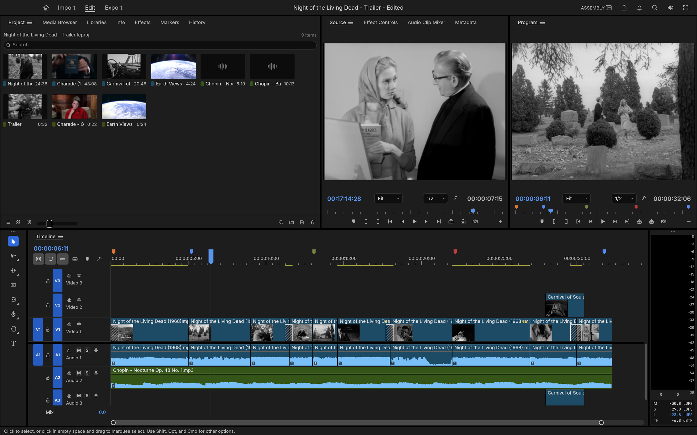
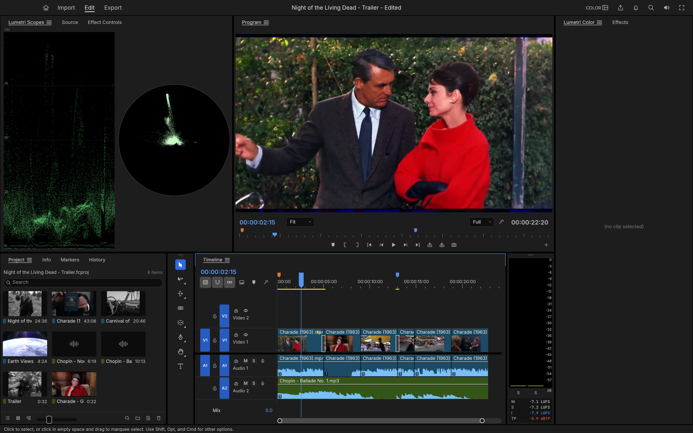
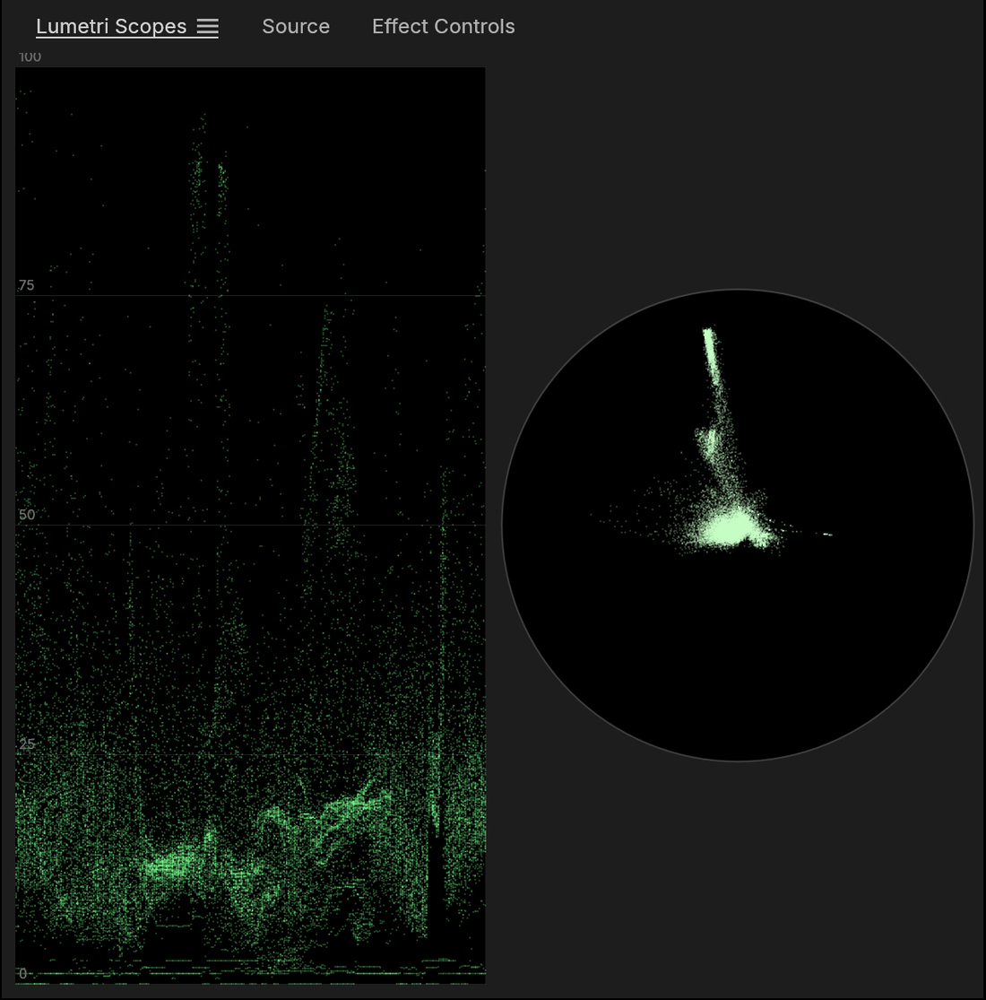
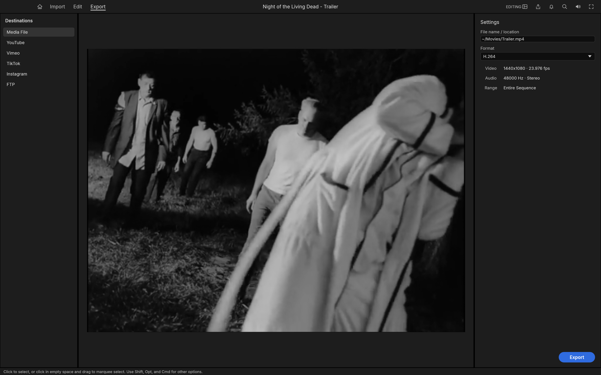

熟悉的时间轴，全新的底层。
FilmCraft 是一款专业非线性视频编辑器：剪辑、调色与声音。原生支持 macOS、Windows 与 Linux，也能通过 WebAssembly 在浏览器里跑。
由 ArtCraft 团队出品。当前处于 alpha，功能广度约为专业 NLE 的 86%。

「汇编」工作区，正在用《活死人之夜》（1968）与《魂魄出窍》（1962）的插入镜头剪一条预告片。
剪辑
熟悉的面板、工作区、工具与快捷键，让你的双手天然知道每样东西放在哪里。而在表层之下，它是从比特流开始全新打造的。
- 时间基准
- 254,016,000,000 ticks/s
- 修剪工具
- 6 种，含动态修剪
- 撤销
- 无限 + 历史面板
三点编辑
在源监视器中标记入点与出点，然后插入（,）或覆盖（.）到已打补丁的轨道上。提升（;）与抽取（'）把选段取出。
全类型修剪
波纹、滚动、滑动、滑行、速率拉伸与剃刀工具。修剪模式把编辑点选为波纹、滚动或修剪，逐帧微调（⌥← ⌥→，配合 ⇧ 可 ×5），用 ⌃T 切换修剪类型，用 E 延伸到播放头。Q 与 W 做指向播放头的波纹修剪。修剪监视器显示编辑点两侧画面，而动态修剪在播放时实时修剪：L 前进、J 后退、K 停止并作为一步撤销提交。
精确时间
每一次编辑都基于整数 tick 计算：每秒 254,016,000,000 个 tick，可被所有常见帧率与采样率整除。23.976、29.97 丢帧与 59.94 都是精确值，而非近似值。
专业人士依赖的细节
带颜色、名称与持续时长的标记；用标记 ▸ 将标记导出为 CSV…导出序列审阅笔记；在一条或所有轨道上添加编辑（⌘K）；嵌套；复制、粘贴与粘贴插入；波纹删除与闭合间隙；吸附；带历史面板的无限撤销。
你的按键
键盘快捷键编辑器（⌥⌘K）带一张手绘键盘图、面板专属快捷键、冲突警告，以及 FilmCraft 与标准 NLE 键位预设。
永不丢失工作
保存是原子操作，自动保存保留一组滚动的版本历史，每次编辑约一秒后写入的崩溃恢复日志，能在崩溃或断电后找回未保存的改动。

调色
一套完整的调色面板，按调色师的工作顺序排列。所有调色都在线性光、32 位浮点下进行，示波器由已调色的帧计算得出。
- 处理精度
- 32-bit float · 线性光
- 内置风格
- 8 种 + 强度调节
- 曲线
- 单调三次插值，无过冲

- 基础校正色温与色调、曝光、对比度、高光、阴影、白色、黑色、饱和度。
- 创意八个内置风格带强度调节，外加褪色胶片、锐化与鲜活度。这些风格是用代码写的色彩变换，而非 LUT 文件。
- 曲线RGB 曲线编辑器，采用单调三次插值（无过冲），以及色相 vs 饱和度、色相 vs 色相、色相 vs 亮度、亮度 vs 饱和度、饱和度 vs 饱和度。
- 色轮阴影、中间调与高光三个色轮，各自带独立的亮度控制。
- HSL 二级按色相、饱和度与亮度抠出某个颜色，把抠像结果以蒙版形式查看，只校正你选中的部分。
- 暗角强度、中点、圆度与羽化。

在线性光、32 位浮点下调色
基础校正、风格、曲线、色轮与暗角层层叠加时不会互相污染，示波器读数从已调色的帧反算，而不是从原始信号估算。
每个分区各自带开关
调色面板按调色师的工作顺序排列：基础校正、创意、曲线、色轮与匹配、HSL 二级、暗角。任何一段都可以单独关掉比对。
HSL 二级当蒙版看
按色相、饱和度与亮度抠出某个颜色，把抠像结果以蒙版形式查看，只校正你选中的那一部分画面。
特效与动效
16 个分类、90 多种特效，约 30 种转场。效果控制面板在每个参数下方显示关键帧轨道，每个被动画化的参数都能展开成数值与速度曲线。
- 特效库
- 16 分类 / 90+
- 转场
- 约 30 种
- 混合模式
- 26 种
一套全面的视频特效库
传统特效，以及约 30 种转场。每个剪辑都带运动与不透明度：位置、缩放、旋转、锚点与防闪烁。
进阶关键帧
线性、贝塞尔、自动与连续贝塞尔、定格、缓入与缓出。效果控制面板在每个参数下方显示一条关键帧轨道，位于带播放头手柄的时间标尺之下；每个被动画化的参数都能展开成数值与速度曲线，并带有可拖拽的影响手柄。
效果控制面板与属性面板共享同一个关键帧导航器 ◀ ◆ ▶：在播放头处添加或删除关键帧，前进到上一帧或下一帧。

GPU 合成器
基于 wgpu（Metal、Vulkan、DirectX 12、WebGPU）构建。它直接从解码器中以 YUV 采样，采用足迹超采样，并在线性光中混合。一条 CPU 渲染路径会渲染相同的帧，两者互为对照测试。
音频
符合广播标准的响度表，自研 DSP 库上的剪辑效果，以及像调音台一样的自动化。声卡作主时钟，画面跟随声音。
- 响度标准
- ITU-R BS.1770 / EBU R128
- 混音性能
- 24 轨 × 3 效果 ≈ 6× 实时
- 整体读数
- 与 ffmpeg ebur128 差 ≤ 0.1 LU
响度表与 DSP
瞬时、短期与整体响度及真峰，与峰值表并列。剪辑效果包括参数均衡、高通、低通与带通滤波器、动态处理、真峰限制器、延迟、混响、降噪、去嗡声、反相与变调。参数可打关键帧，效果在擦洗、播放与导出之间保持连续，并做延迟补偿。
两个混音器
音频轨道混音器与音频剪辑混音器：推子、声相、静音、独奏，每条轨道五个插入槽（推子前或推子后）、发送、子混音与混音轨，全部采样精确并做延迟补偿。
像调音台一样的自动化
读取、闩锁、触控与写入模式，在播放时从混音器实时录制，并以轨道关键帧的形式在时间轴上显示与编辑。外加音频增益对话框（设定、调整、归一化）与等功率交叉淡化。
音频时钟播放
声卡作主时钟，画面跟随声音，而非相反。参数均衡器、真峰限制器与混响都在自研 DSP 库上运行，延迟补偿贯穿擦洗、播放与导出。
字幕与唱词
真正的文字引擎，节目录监视器上的文字、形状与钢笔工具，以及帧精确的唱词轨。
- 文字
- OpenType 塑形 · 双向文本
- 唱词轨
- Subtitle / CEA-608 / 708
- 交换
- SRT · WebVTT · SCC
文字引擎
OpenType 塑形，支持字距与连字、双向文本、换行、字距调整与行距，在线性光中绘制，任意缩放或旋转都保持清晰。
图形与形状
点击即输入，用光标与选区编辑，拖出矩形、椭圆与路径。图形剪辑容纳文字与形状图层，带填充、描边、背景与阴影，全部可打关键帧，并在属性面板中编辑。
唱词
唱词轨支持 Subtitle、CEA-608、CEA-708 与图文电视（Teletext）格式；以帧精确的时间导入导出 SRT、WebVTT 与 SCC；在文字面板中编辑唱词，并将其烧录进导出文件。
格式与编解码器
内部没有 FFmpeg。视频编解码器、AAC、Opus 与容器都是我们自己的 Rust 代码，依据公开的 ITU-T、ISO 与 IETF 规范实现，并逐帧对照 ffmpeg 作为外部对照基准进行测试。
- 自研实现
- H.264 · HEVC · ProRes · AAC · Opus
- 解码速度
- 1080p 下 500–600 fps
- 容器
- MP4 · MOV · MKV · WebM · AVI
| 编解码器 / 容器 | 解码 | 编码 | 备注 |
|---|---|---|---|
| H.264 / AVC | ✓ | ✓ | 解码器在 37+ 条码流上逐位精确，1080p 下 500–600 fps。编码器：High、Main 与 Baseline 档，CABAC、B 帧、CRF/CBR/VBR/2-pass |
| HEVC / H.265 | ✓ | — | Main 与 Main 10，在 41 条码流上逐位精确（tile、WPP、PCM、长期参考），1080p 下约 225 fps |
| Apple ProRes | ✓ | ✓ | 解码 422 Proxy 至 4444 XQ；导出写入 422 HQ |
| AAC-LC | ✓ | ✓ | |
| VP8 | ✓ | — | 全部编码工具，码流版本 0–3，隐藏的 altref 帧，透明 WebM 的 alpha 层；在已发布的 VP8 测试向量上与 libvpx 逐位精确；封装于 WebM/Matroska 与 MP4 |
| VP9 | ✓ | — | 档位 0–3，8/10/12-bit，4:2:0 至 4:4:4，tile 与超级帧；在 50+ 条码流上逐位精确；封装于 WebM/Matroska 与 MP4 |
| Opus | ✓ | — | SILK、CELT、混合与多流环绕；在每一个 RFC 8251 一致性向量上范围精确；封装于 WebM/Matroska 与 MP4 |
| AV1 | ✓ | — | Main 档，8/10-bit 4:2:0 与单色，含胶片颗粒、超分辨率与空间层在内的全部编码工具；在测试所用的 libaom 向量上与 libdav1d 逐位精确；封装于 MP4 与 WebM/Matroska |
| DNxHD / DNxHR | ✓ | ✓ | 全部 SMPTE ST 2019-1 CID（LB 至 444，8/10/12-bit）；导出在 MOV 中写入 DNxHR |
| MJPEG、PCM | ✓ | ✓ | |
| MP3、FLAC、ALAC、Vorbis | ✓ | — | 目前通过 symphonia crate（MPL-2.0）实现，后续将替换为自研 |
| MP4 / MOV | ✓ | ✓ | 分片 MP4、编辑列表、时码轨 |
| Matroska / WebM | ✓ | — | 缝合、Cues、头部剥离、HDR 色彩元数据 |
| AVI | ✓ | — | AVI 1.0 与 OpenDML（大于 1 GB 的文件）；Motion JPEG、H.264、HEVC 与未压缩的 RGB / YUV，搭配 PCM、MP3、MP2 或 AC-3。暂不支持 DivX / Xvid 与 DV |
| 静帧 | ✓ | ✓ | 导入 PNG、JPEG、GIF、WebP、TIFF 与 BMP（动态 GIF、APNG 与 WebP 作为带透明度的剪辑）；导出 PNG 序列与动态 GIF |
还能导入
MPEG-2 / MPEG-1 视频、AC-3、MP2、MXF（OP1a / OP-Atom）、MPEG 传输流与节目流（AVCHD、广播、DVD）、Ogg 与图像序列。
硬件解码与编码
硬件解码在 macOS（VideoToolbox）、Windows（Media Foundation）上可用，对于 H.264 与 HEVC 在 Linux（VA-API）上也可用；H.264 导出在 Windows 与 Linux 上可使用 NVIDIA 编码器（需开启），H.265（HEVC Main，8-bit）导出也通过它实现（Windows 用 NVENC，macOS 用 VideoToolbox）。
暂不支持：AV1 导出、相机 RAW、E-AC-3。
导出
使用自研编码器的 H.264 MP4 与 AAC。一段 6 秒、960×540 的渲染耗时 1.3 秒，在 ffmpeg 中解码不产生任何警告，且开启了严格错误检测。
- 软件导出
- H.264 / AAC MP4
- 渲染
- 6 s @ 960×540 → 1.3 s
- 后台任务
- 带进度与取消

还支持
QuickTime 中的 Apple ProRes 422 HQ 与 Motion JPEG、MXF OP1a 与标准 OP-Atom（DNxHR、ProRes 或 H.264 搭配 PCM 与起始时码）、PNG 序列、动态 GIF 与 WAV。
后台任务
带进度与取消，让你在渲染的同时继续剪辑。
渲染预览
渲染条把区段标记为绿、黄或红；渲染预览按内容缓存，因此一次编辑只会让受影响的部分失效，而撤销能把绿色找回来。
互通
在 FilmCraft 与任何其它编辑器之间交换时间轴。导入会把文档里的素材箱、媒体与序列作为一个可撤销的步骤合并进你的项目，并把它在磁盘上找到的每个媒体文件链接起来。
- 时间轴交换
- 6 种格式
- 导入行为
- 单步可撤销
FCP 7 XML（xmeml）
业界标准的时间轴交换格式。它承载嵌套序列、转场、生成器、运动、不透明度、时间重映射与带关键帧的音频电平。
FCPXML 1.9–1.11
脊柱结构，连接剪辑作为轨道，含转场、重定时与复合剪辑。
OpenTimelineIO
影视行业的开放交换格式，通过 metadata.filmcraft 往返保留每一个 FilmCraft 细节。
CMX 3600 EDL
仍在使用的最古老格式，带丢帧时码、叠化、擦除、速度变化（M2），每条轨道一个 EDL。
AAF（Edit Protocol）
标准的时间轴与音频交换格式。视频与音频轨道、叠化与渐变、带关键帧的剪辑音量、标记与源时码；音频以内嵌或独立 WAV / AIFF 文件形式存在，带手柄修剪，剪辑效果已渲染进去并拆为单声道，外加可选的视频混音。导入会读回 AAF，提取内嵌的音频。
OMF 2.0
音频后期交接：带交叉淡化与增益、采样精确的音频轨道，音频封装在内或并列存放。
为智能体而生
每一个菜单项、按钮、滑块与拖拽动作，都是一个带 id、类型化参数与启用状态的命令。UI、CLI、JSON 控制通道与一个 MCP 服务器都派发相同的命令。
- 引擎命令
- 650+ 且持续增加
- 控制通道
- TCP 上的 JSON 行
- MCP
- 无界面服务器
{"method": "engine.execute", "params": {"command": "timeline.place", "params": {"item": 1, "track": "V1", "seconds": 0, "sourceIn": 284298240000000, "duration": 1270080000000}}} // 通过控制通道（TCP 上的 JSON 行）或作为 MCP 工具调用来发送 {"method": "engine.execute", "params": {"command": "effects.setParam", "params": {"clip": 87, "effect": "lumetri", "param": "curve_luma", "value": [[0,0],[0.25,0.21],[0.75,0.82],[1,1]]}}} // 三条命令：放置剪辑、改调色曲线、截一帧 {"method": "ui.screenshot", "params": {"path": "frame.png"}}
UI 也能被驱动
每个小部件都有 automation id，智能体可以点击、拖拽、输入并截屏。这些截图里的预告片与调色，正是一位智能体驱动运行中的程序、以完全相同的方式完成的。
同一套命令
UI、CLI、JSON 控制通道与 MCP 服务器派发相同的命令，因此 Claude 或任何智能体都能像人一样精准地剪辑、修剪、调色、混音与导出。
无界面也能跑
filmcraft-cli mcp 启动 MCP 服务器；filmcraft-cli commands 列出每一个引擎命令。
无处不在
同一个引擎，桌面原生、浏览器 WebAssembly，以及一层可替换的界面。
- 原生
- macOS · Windows · Linux
- 网页端
- WebAssembly
原生
支持 macOS、Windows 与 Linux，并带有原生 macOS 菜单栏。
网页端
相同的引擎与 UI 通过 WebAssembly 在浏览器中运行（apps/filmcraft-web）；每个发布版本都会把它打包为 filmcraft-web-<version>.zip。
可替换的 UI
界面是引擎之上的一层 crate（ui-egui），因此不同的前端可以在不触碰编辑逻辑的情况下替换它。
快速上手
从源码构建。需要 Rust 工具链；界面与字幕里使用的日语文字来自 craft-fonts，它是一个可选的构建输入（发布构建始终包含它）。
- 桌面包
- -p filmcraft
- CLI
- -p filmcraft-cli
- 字体内嵌
- CRAFT_FONTS_DIR
# 桌面应用，附带一个演示项目 cargo run --release -p filmcraft # 再加上 JSON 行控制服务器 cargo run --release -p filmcraft -- --control 9876 # 列出每一个引擎命令 cargo run --release -p filmcraft-cli -- commands # MCP 服务器（无界面） cargo run --release -p filmcraft-cli -- mcp
git clone https://github.com/storytold/craft-fonts \ ../craft-fonts CRAFT_FONTS_DIR="$PWD/../craft-fonts" \ cargo run --release -p filmcraft
遇到问题？
控制协议记录在 docs/control-protocol.md。想展示你的作品，来 Discord 告诉我们。
没有 craft-fonts 时，FilmCraft 使用自身字体与系统字体；发布构建始终包含它。
状态
FilmCraft 年轻且快速演进。剪辑、修剪、多机位、调色、关键帧、特效、字幕、唱词、混音、编解码器与导出，今天都已可用。它目前处于 alpha 阶段。
- 对等度测量
- 2026-10-10
- 许可
- MIT | Apache-2.0
目前最大的差距
大素材上的速度。混合模式与常见特效在 GPU 上，但调色、抠像与导出渲染仍在 CPU。H.264 编码可在 macOS 上、以及 Windows 与 Linux 配合 NVIDIA GPU 时使用硬件编码器。
原生 .prproj 导入。尚无法打开；请用 FCP7 XML、AAF 或 OTIO 带过来。
无插件。不托管 VST3 / Audio Units 或 OpenFX。
交付编解码器
H.264 是唯一用软件导出的交付编解码器；H.265 只能通过硬件编码器导出（Windows 上 NVIDIA：Main 8-bit SDR 与 Main 10 HDR PQ / HLG；macOS 上 VideoToolbox：8-bit Main，SDR）；暂无 AV1 导出。
真实素材与平台
解码器在一致性码流上逐位精确，但现实中的相机与手机文件测试较少。Windows 与 Linux 得到的测试远少于 macOS。
AI 功能
目前很少；语音转文字为可选，且默认关闭。带真实素材的 bug 报告是你最能帮到我们的东西。
架构
一个分层的 Cargo 工作区。前端以下的部分都不依赖任何 UI 工具包或操作系统 API。
- CI
- cargo xtask ci
| 层 | Crate |
|---|---|
| 编解码器与容器 | h264 · h264enc · hevc · vp9 · prores · aac · opus · isobmff · matroska · avi · bitstream |
| 基础库 | time · geom · color · frame · media · text · project · audio-dsp |
| 编辑与互通 | edit · codecs · captions · format · interchange |
| 渲染与输出 | render · gpu · export |
| 引擎 | engine — 命令注册表、会话、撤销、任务 |
| 前端 | ui-egui · automation (MCP) · apps/filmcraft · apps/filmcraft-cli |
| 测试支持 | testkit（ffmpeg 对照基准、测试素材）· golden（黄金图像测试） |
cargo xtask ci 会检查格式化、lint、测试、分层规则、资源署名与 wasm 构建。
下载
刚开始用 FilmCraft？从 getartcraft.com 上的 FilmCraft 页面下载，那是最简单的安装方式。想要某个特定构建或格式，在 GitHub 上取最新发布。
- 最新发布
- releases/latest
- 校验和
- SHA256SUMS.txt
| 构建 | 安装程序 | 便携版 |
|---|---|---|
| x64（64 位 Intel/AMD） | filmcraft-<ver>-windows-x64.msi | filmcraft-<ver>-windows-x64-portable.zip |
| arm64（骁龙及其它 ARM PC） | filmcraft-<ver>-windows-arm64.msi | filmcraft-<ver>-windows-arm64-portable.zip |
| x86（32 位） | filmcraft-<ver>-windows-x86.msi | filmcraft-<ver>-windows-x86-portable.zip |
安装程序与可执行文件均经过代码签名。
如果应用在 Windows 上打不开
桌面应用默认只初始化 Vulkan 与 DirectX 12，而非 OpenGL。让 wgpu 同时创建一个 OpenGL 实例，可能在窗口出现前就让某些显卡驱动（AMD 的 atio6axx.dll）崩溃，于是应用会在任务管理器里一闪而过然后退出。WGPU_BACKEND 可覆盖默认设置用于排障（例如 dx12 或 vulkan）。在 PowerShell 中，于包含可执行文件的目录下：
$env:WGPU_BACKEND = "vulkan"
& .\filmcraft.exe
Remove-Item Env:WGPU_BACKEND # 恢复默认设置
显式指定 gl 会在受影响的系统上让驱动崩溃重现。一台装有同一厂商不同驱动包的 GPU 的 PC（例如带有集成与独立两块 AMD GPU 的笔记本），可能把同一块 GPU 列出两次，各自经由安装的某个 Vulkan 驱动版本；FilmCraft 会使用较新的那块绘制，并在 %APPDATA%\FilmCraft\Logs\filmcraft.log 中说明。macOS、Linux 与网页端的后端默认值保持不变。
| 构建 | 文件 | 备注 |
|---|---|---|
| 应用，通用版（Apple 芯片 + Intel） | filmcraft-<ver>-macos-universal.dmg | 已签名并公证 |
| 命令行工具，通用版 | filmcraft-cli-<ver>-macos-universal.zip | 已签名并公证 |
| 格式 | x86_64 | aarch64（ARM64） |
|---|---|---|
| AppImage | filmcraft-<ver>-linux-x86_64.AppImage | filmcraft-<ver>-linux-aarch64.AppImage |
| Flatpak | filmcraft-<ver>-linux-x86_64.flatpak | filmcraft-<ver>-linux-aarch64.flatpak |
| Debian / Ubuntu | filmcraft-<ver>-linux-x86_64.deb | filmcraft-<ver>-linux-aarch64.deb |
| Fedora / RHEL / openSUSE | filmcraft-<ver>-linux-x86_64.rpm | filmcraft-<ver>-linux-aarch64.rpm |
| 压缩包 | filmcraft-<ver>-linux-x86_64.tar.gz | filmcraft-<ver>-linux-aarch64.tar.gz |
RISC-V
filmcraft-<ver>-linux-riscv64.tar.gz（仅压缩包；需要 glibc 2.39+，例如 Ubuntu 24.04 或 Debian 13）。
安装位置
压缩包安装程序把 FilmCraft、命令行工具与桌面集成放进 ~/.local，无需管理员权限；sudo ./install.sh --prefix /usr/local 可为所有用户安装。再次运行会更新现有安装。
Gentoo（社区维护）：::snakebyte overlay 把 Linux 发布版打包为 media-video/filmcraft-bin，由社区维护，打包问题请向该 overlay 反馈。
| 构建 | 文件 |
|---|---|
| x86_64 | filmcraft-<ver>-freebsd-x86_64.tar.gz |
| 构建 | 文件 | 备注 |
|---|---|---|
| 静态站点 | filmcraft-web-<ver>.zip | 运行于现代浏览器；托管到任意静态服务器 |
Crafting 系列应用
FilmCraft 是 Crafting 系列应用之一：由 ArtCraft 团队出品的免费、开源创意工具，每一个都用 Rust 从零编写，且都能独立运行。
文档
从环境搭建到分层规则，从控制协议到对等度检查清单。
- 贡献指南
- CONTRIBUTING.md
- 架构
- docs/architecture.md
| 文档 | 内容 |
|---|---|
| CONTRIBUTING.md · docs/contributing.md | 环境搭建、质量门禁、提交规范，以及如何添加命令、特效、编解码器、面板与资源 |
| AGENTS.md | 每位贡献者都必须遵守的规则：资源、净室、许可证 |
| docs/architecture.md | 分层、数据模型、时间基准、命令系统、渲染与导出管线 |
| docs/testing.md | 单元、属性与 ffmpeg 对照测试，精度标准，基准测试 |
| docs/agents.md | 通过 MCP 与控制通道驱动 FilmCraft；智能体如何参与开发 |
| docs/control-protocol.md | 控制通道与 MCP 参考 |
| docs/project-files.md | .fcproj 格式、schema 迁移、自动保存与崩溃恢复 |
| docs/graphics.md · docs/captions.md | 文字引擎、图形剪辑与工具；唱词轨与格式 |
| ROADMAP.md | 阶段、对等度数字、语言、下一步与发展日志 |
| docs/target-app-parity.md · gaps.md · roadmap.md | 对等度评估、差距排序清单、里程碑与当前重点 |
| codec / file-format / hardware / ui / localization parity | 分维度的对等度检查清单 |
许可与致谢
FilmCraft 采用双重许可：你可在 MIT 或 Apache-2.0 之间任选其一。版权所有 (c) 2026 ArtCraft Team 与 FilmCraft 贡献者。
- 许可
- MIT | Apache-2.0
- 声明
- NOTICE
独立实现
它不含任何专有代码、图标、图像、预设或 LUT，也不含 GPL 或 LGPL 代码；每个图标都用代码绘制，每个资源都是开放许可并具名署名（见 AGENTS.md）。ffmpeg 仅作为外部测试对照基准使用。
截图中的素材与音乐
NASA 的阿波罗 11 号素材与空地语音来自 images.nasa.gov（美国政府公有领域，《活死人之夜》《魂魄出窍》《谜中谜》均为美国公有领域作品）；肖邦的《夜曲》Op. 48 No. 1 与《叙事曲》No. 1 由 Musopen 演奏并以 CC0 发布。媒体本身不在仓库中。
商标
docs/brand/ 中的 ArtCraft 名称、字标与徽标是 ArtCraft Team 的商标，不受本许可证覆盖。它们只能原样、且只能作为本仓库与 FilmCraft 的一部分使用。分支与修改版本必须移除它们。打包的字体、图标、图像及其它资源保留各自的开放许可证，每一样都在 ATTRIBUTION.md 中按其作者、来源与许可证列出。